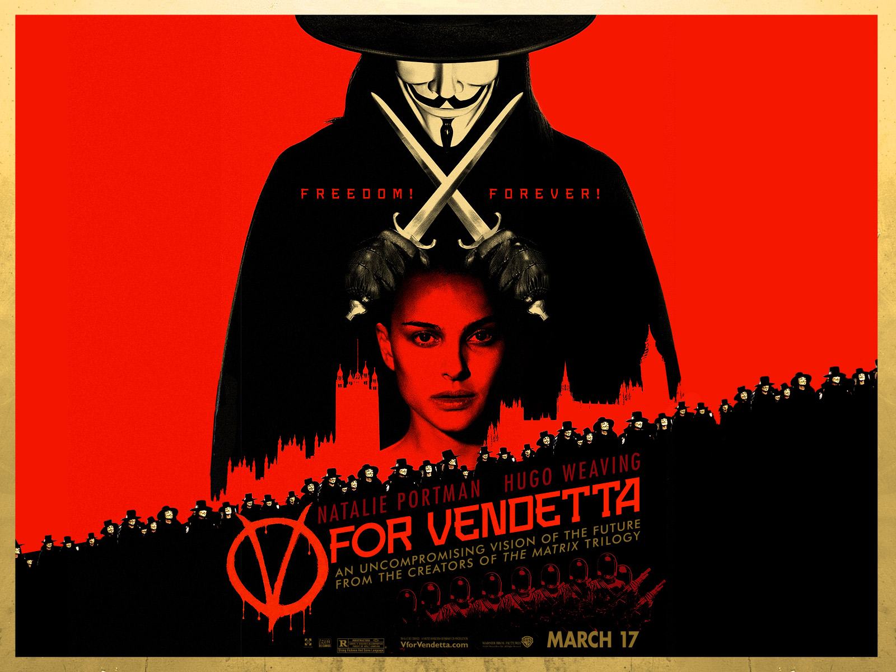
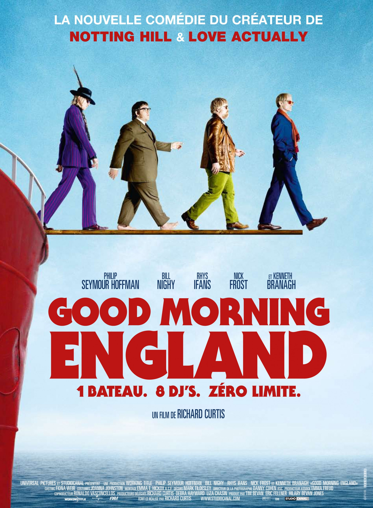

Description très intéressante, à lire avec la plus grande attention, si vous êtes en train de lire jusqu'ici vous avez probablement perdu quelques secondes de votre vie inutilement, mais si vous lisez jusqu'à la fin ce que j'écris, vous aurez alors appris qu'on peut perdre énormément de temps à lire n'importe quoi !
Au cas où ...|  |
V pour VendettaV pour Vendetta se passe dans l'Angleterre fasciste de l'après-guerre nucléaire, où apparaît un justicier implacable signant ses actes de la lettre V. Obsédé par le souvenir d'une culture désormais interdite et disparue, cruel et terriblement intelligent, V s'attaque aux plus forts symboles de la dictature, animé par un immense désir de vengeance et une indicible haine. La police du Commandeur est sommée de mettre fin ses agissements au plus vite... |
|  |
Good morning englandCarl vient de se faire renvoyer du lycée, et sa mère a décidé qu'il irait réfléchir à son avenir auprès de son parrain, Quentin. Il se trouve que celui-ci est le patron de Radio Rock, une radio pirate qui émet depuis un bateau en mer du Nord peuplé d'un équipage éclectique de DJ's rock and roll. Un bateau. Huit DJ's. Zéro limites. À leur tête se trouve le Comte, dieu des ondes en synergie totale avec la musique. |